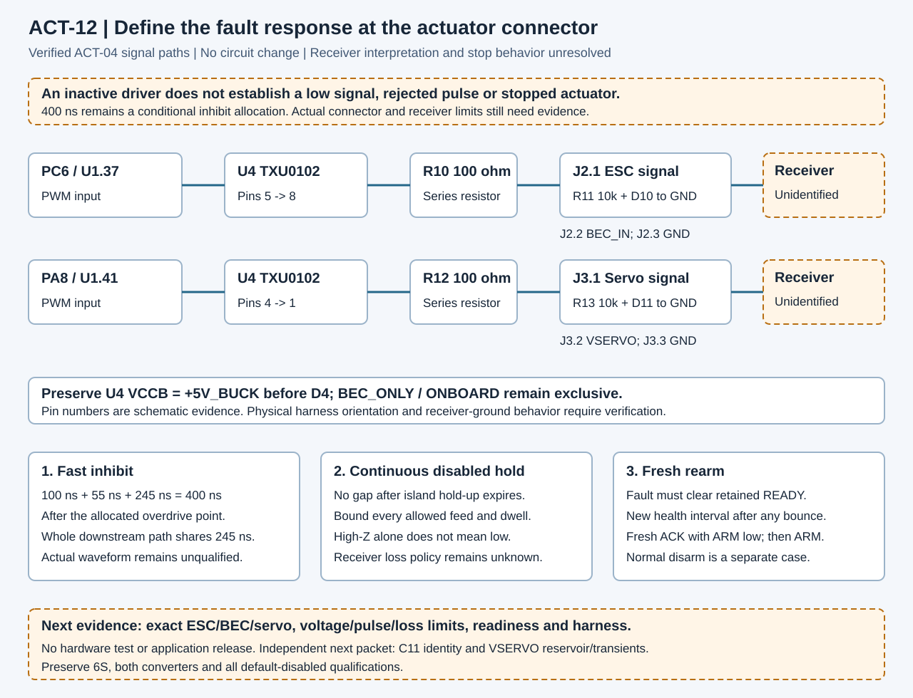

What must a fault do at the actuator connector?
ACT-12 traces the existing circuit to three separate obligations: fast inhibition, continuous disabled hold and fresh rearm.
Explore the fault requirements
Trace the inherited 400 ns allocation
100 ns sensing + 55 ns detector + 245 ns for the entire downstream path. This clock begins at the allocated overdrive point under conditional ramp assumptions. It is not a receiver pulse-width limit or an actuator-stop deadline.
Positive arithmetic margin never qualifies actual waveform response or receiver behavior. Equality is not accepted. Steps, short excursions and non-monotone faults remain outside this calculation.
Native signal paths and the unclosed boundary

Open the diagram for full-size inspection. Electrical pin numbers do not establish a physical harness orientation.
Receiver evidence required
Both records remain incomplete. Presence of documentation is not hardware acceptance; a reviewed circuit and measured application evidence are separate gates.
What happens next
Identify the ESC, BEC and steering servo and record their input, pulse, signal-loss and readiness limits. A third isolation-part screen cannot resolve missing receiver behavior.
The next independent circuit packet addresses C11 identity and the VSERVO reservoir/transient contract. Preserve both converters, source populations, the 6S requirement and default-disabled missing qualifications.
Read exact topology and timing evidence · Choose an application guide